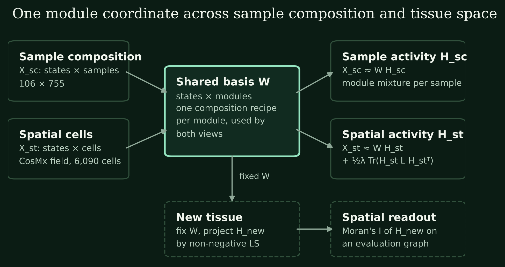
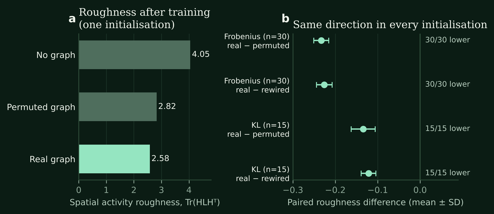
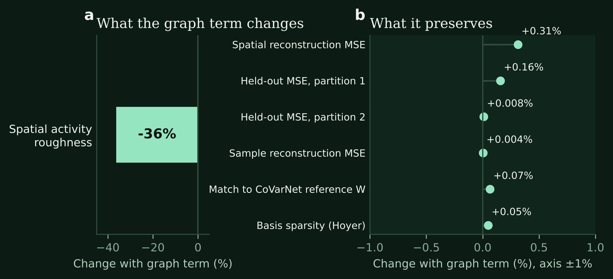
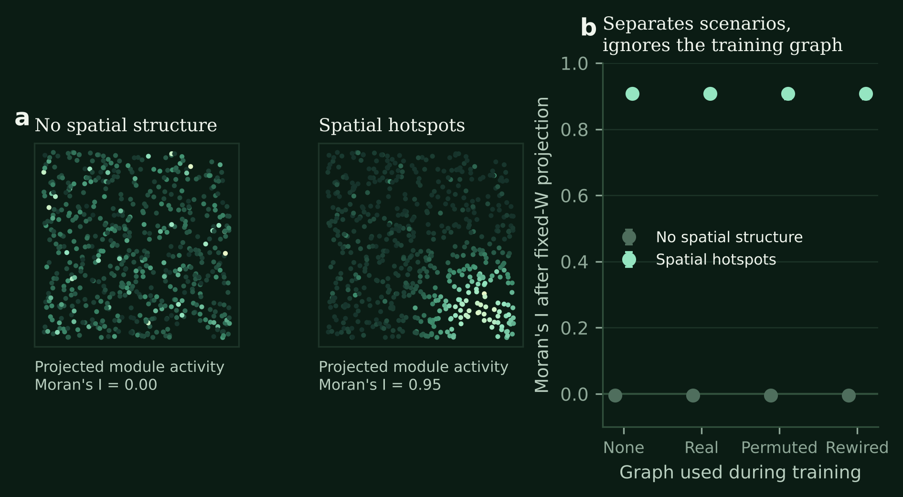

Composition modules need a tissue coordinate
CoVarNet tells us which cell states co-vary across samples, for example regulatory and cytotoxic T-cell states rising and falling together. It leaves the next question open: where in tissue these combinations are realized.
Most spatial factorization methods learn their own gene programs slide by slide, so composition modules and spatial activities live in different coordinate systems.
SpaCoVarNet-GS gives both a single module basis W. The same module recipe explains sample-level state composition and the state of every cell in tissue; graph constraints then organize spatial activity along neighborhoods. This yields three results:
- A controllable spatial lever. Turning on the graph constraint lowers spatial activity roughness by 36%, in the same direction across all 45 initializations under Frobenius and KL losses and against two null graphs.
- Module identity is preserved. Matching to the CoVarNet reference basis moves from 0.852 to 0.853 and spatial reconstruction error changes by 0.31%: the constraint reorganizes spatial activity, not the modules.
- A spatial readout independent of the training graph. Moran's I after fixed-W projection separates organized from unorganized synthetic tissue (0.91 vs 0.00), whichever graph was used in training.
Prototype data: 106 cell states, 755 single-cell samples and one 6,090-cell CosMx renal cancer field, rank 9; synthetic validation in section 05.
A shared basis captures composition while each view retains its distribution




The model operates on a common cell-state axis. Each column of W describes a module's state composition; each column of H describes module activity in a sample or spatial observation:
Sharing W creates a common module coordinate system. Separate H_sc and H_st preserve each view's module mixtures, allowing an observation to express several modules through continuous activities.
Reconstruction weights are set by observation count, with an additional 0.1 multiplier for CosMx. This makes each view's contribution explicit. Views align on state identifiers and row order; the CosMx soft mapping uses its 486 covered reference genes.
The CoVarNet nsNMF baseline uses X≈WSH. SpaCoVarNet-GS explicitly specifies graph and L1 terms, making neighborhood organization and sparsity separately controlled modeling choices. CoVarNet study · nsNMF model definition
The graph constraint is a stable spatial lever
The graph constraint makes neighboring cells' module activities more coherent. It is the objective term ½λ Tr(H L Hᵀ): the sum over edges of squared activity differences, or activity “roughness”, with L = D − A the Laplacian of the spatial neighbor graph.
A usable lever needs two properties: it has an effect, and the effect has a predictable direction. Figure 2 shows both. In one initialization, roughness drops from 4.05 without the graph to 2.58. Across 45 initializations, two losses and two null graphs (coordinate permutation and degree-preserving rewiring), the real graph gives lower roughness every time.




On real tissue, the smoothing strength λ is therefore a parameter with predictable behavior: increasing λ reorganizes module activity along actual adjacency, with a direction that does not depend on initialization.
Spatial activity is reorganized; modules are not rewritten
The usual risk of a spatial prior is that it rewrites the modules to achieve smoothness. SpaCoVarNet-GS separates the two: W carries module state recipes and smoothing acts only on H. Figure 3 quantifies this division of labor.




While roughness falls by 36%, sample-view reconstruction is essentially unchanged (+0.004%), matching to the reference basis is unchanged (+0.07%; mean paired differences across 45 initializations stay within 0.0016), and basis sparsity is unchanged (+0.05%). Spatial reconstruction error rises by 0.31% and regional held-out reconstruction by 0.16% and 0.008%. This is the intended tradeoff of a smoothness prior: activity stops tracking per-cell measurement noise in exchange for module distributions that are coherent along tissue neighborhoods.
A spatial readout independent of the training graph
To ask whether modules truly form contiguous regions in tissue, the readout cannot come from the training objective. SpaCoVarNet-GS fixes the learned W, projects new tissue into H without any graph term, and computes Moran's I of each module's activity on an evaluation graph (spatial autocorrelation: 0 for random placement, approaching 1 for contiguous regions).
We tested this readout on synthetic tissue. Two datasets share the same module recipes; in one, spatial activity is random per cell, in the other it forms hotspots.




Moran's I is about 0.91 with spatial organization and about 0.00 without; across the four training configurations the former stays within 0.907–0.908. The readout reflects the tissue, not which graph was used in training. This is exactly the property needed when modules are projected into new patients and new tissue.
Placing composition modules in tissue space
SpaCoVarNet-GS gives cellular composition modules a tissue coordinate. One shared basis explains both sample composition and cells in tissue; the graph constraint acts as a controllable lever that lowers spatial roughness by 36% while module recipes and reconstruction are preserved; and Moran's I after fixed-W projection provides a spatial readout independent of the training graph.
Within PanCancer, it serves as the spatial projection and validation interface after context modules are frozen: discovered multicellular modules are projected into independent spatial cohorts such as NSCLC lymph-node protein imaging, MERFISH and CosMx material, and evaluated with the same readout.
Xin Xiong · First published 28 October 2026, updated 31 October 2026. Methods and complete comparisons · Figure data · Prototype aggregate results and fingerprints